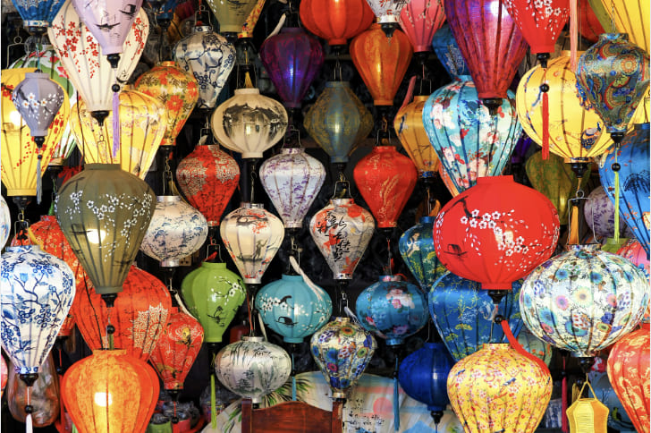

Featured
The Complete Hoi An Travel Guide 2025: Everything You Need to Know
From hidden beaches to the best banh mi stands, discover everything Hoi An has to offer. This comprehensive guide covers transportation, must-visit spots, cultural experiences, and insider tips from locals and long-term travelers.
Read Full Guide →